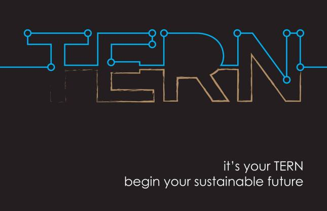

The beginning of Tern Water
TERN is the name of my startup and my lifelong dream. When I was 17, I had the dream of starting something that could change the world. I named that dream project “X” and the X stood for what’s unknown. Every since I started appreciating the world around us and acknowledging that the world around us is beautiful. I came to learn that everything that happened to me was another opportunity to learn something new and that every minute that passes was another chance to change the world around you.
Thinking about how different people see the world became one of my biggest interested. Talking to different people with different definitions to life and just how they look at the world differently seemed very fascinating to me. The other thing that always grasped my attention was energy and it’s huge influence on the world. I always felt it was unacceptable that millions of people around the world don’t have clean water yet have a phone in their pockets.
I believe that the world needs a lot of more change makers or as how Steve Jobs once said “The crazy ones”. I believe that we at TERN are among those crazy ones. We work as hard and intelligent as we can to stop dreaming and start living. We believe that people deserve to live in a better lifestyle but still benefit the whole world around them. Our vision is to create a world were people are truly independent and everyone has their basic needs. A world that can sustain itself. A world that would be wasting nothing and recycling everything.
 To go places and do things that have never been done before – that’s what living is all about.Check out ternwater.com